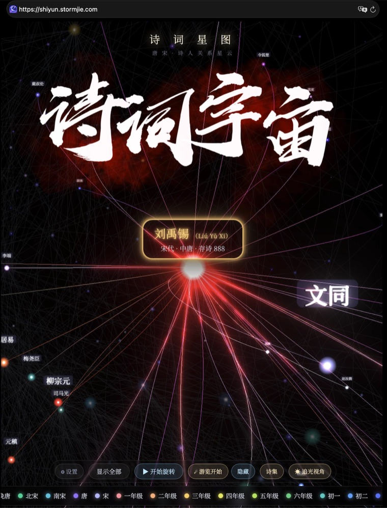

用 AI 重构这个世界
主页正在建设中，请访问子项目：shiyun.stormjie.com

1,036 位诗人、325,027 首诗，我把唐宋诗词和中小学课本里的古诗放进了一片三维星云。诗人的朋友圈和关系可视化，诗人之间的关系越近距离越近，关系越多连线越多。可看到诗人的完整诗集，还可以跟随一颗彗星，沿着关系网络在诗人之间穿梭。从《静夜思》到《沁园春雪》，从课本名篇到唐宋诗词全集，都汇聚在这片宇宙里。